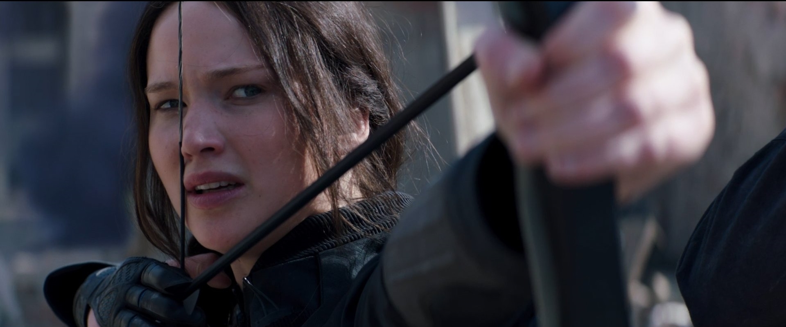

.png)
Los Juegos del Hambre
Detalles
Autora: Suzanne Collins
Género: Literatura juvenil, Ciencia ficción
Triología y precuela: La triología principal consta de Hambre, Los Juegos del Hambre en llamas, Los juegos del hambre Sinsajo en el año 2020 se publicó su precuela Balada de pájaros cantores y serpientes.
Adaptaciones cinematográficas: Los Juegos del Hambre, Los Juegos del Hambre en llamas, Los Juegos del Hambre Sinsajo parte 1, y Los Juegos del Hambre Sinsajo parte 2 y cuenta con una precuela llamada Balada de pájaros cantores y serpientes que será traida a cines a finales de este noviembre de 2023.
Trailer de Los Juegos del Hambre en Youtube:
Sinopsis
Los Juegos del Hambre es una novela de ciencia ficción escrita por Suzanne Collins. La historia tiene lugar en Panem, donde el Capitolio tiene el control absoluto sobre los 12 distritos que conforman el país.
Cada año, el Capitolio organiza un evento llamado "Los Juegos del Hambre", en el que se elige a un chico y una chica de cada distrito para luchar a muerte en una arena hasta que solo quede un ganador. Los Juegos del Hambre son transmitidos en vivo en todo el país y se convierten en un espectáculo televisivo sangriento y cruel que sólo es disfrutado en el Capitolio.
La protagonista de la historia es Katniss Everdeen, una joven de 16 años que vive en el Distrito 12, el más pobre de todos los distritos. Cuando su hermana Primrose es elegida como tributo para los juegos del hambre, Katniss se ofrece voluntariamente para tomar su lugar y luchar en su nombre.
En la arena, Katniss debe enfrentarse a otros tributos, algunos de ellos entrenados durante años para los Juegos, y sobrevivir a trampas mortales y peligrosos enemigos. Pero también comienza a formar alianzas y descubre que no todos los competidores son enemigos.
Personajes
Los personajes que conforman la saga de Los Juegos del Hambre son:
Katniss Everdeen:
Katniss Everdeen es la protagonista de la trilogía, es una joven valiente y decidida que lucha por sobrevivir proteger a sus seres queridos sobre cualuqier cosa.
Peeta Mellark
Peeta Mellark es el otro protagonista de Los Juegos del Hambre. Es un chico amable y astuto que se enamora de Katniss y usa su habilidad para decorar pasteles para sobrevivir en los juegos.

Katniss Everdeen de @AnsuzMagazine by Flickr
Haymicht Abernathy
Haymitch Abernathy es el mentor de Katniss y Peeta en los juegos . Es un ex-tributo del 50 aniversario de los juegos que lucha contra su adicción al alcohol mientras intenta ayudar a los tributos que entrena a sobrevivir en los juegos.
Effie Trinket
Effie Trinket es una mujer extravagante que trabaja para el Capitolio como escolta de los tributos en Los Juegos del Hambre. Al principio parece indiferente a la crueldad de los juegos, pero con el tiempo desarrolla un vínculo muy fuerte hacia los tributos.
Elenco principal de la película por @YourWayMagazine by Flickr
Coriolanus Snow
Coriolanus Snow es el presidente de Panem es un hombre astuto y manipulador que utiliza los juegos como una herramienta de control y opresión sobre los ciudadanos de Panem, es de igual manera, el protagonista de su precuela.
Otros personajes
- Gale Hawthorne
- Primrose Everdeen
- Rue
- Finnick Odair
- Plutarch Heavensbee
Opinión personal
Los Juegos del Hambre me parece una saga literaria y cinematográfica increíble, que te abre las puertas a un mundo completamente diferente, lleno de acción, aventuras y fantasía.
Se los recomendaría a todas las personas que disfruten las lecturas de acción y distopías seguro que no se van a arrepentir de dedicarle un tiempo a leer esta fantasía de novelas.
Si quieres acceder a más información puedes acudir a la página de Fandom o a la Wikpedia
Si no la has visto, te recomiendo que veas el trailer y te adentres en este mundo ⬆️(da click en la flecha)